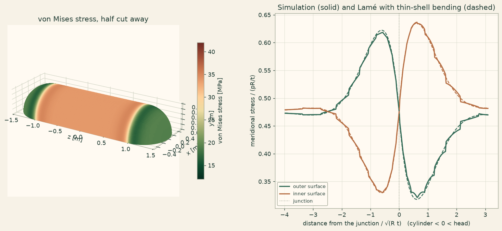
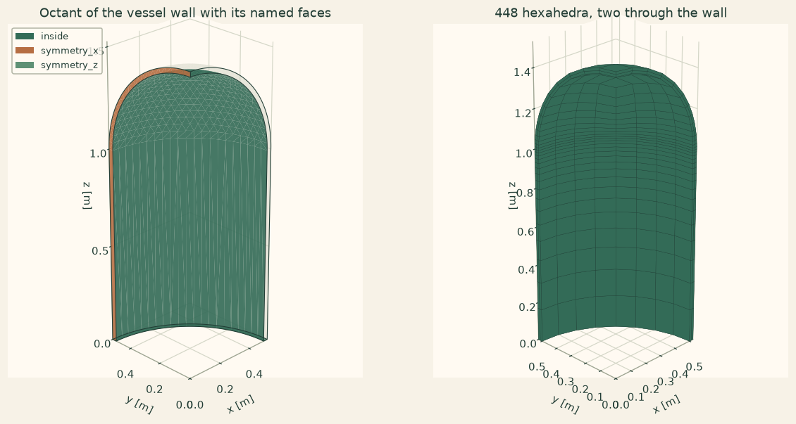

Docs › Examples › Pressure vessel with hemispherical heads
Linear elasticity · 3D
Pressure vessel with hemispherical heads
A closed steel vessel under internal pressure: membrane stresses far from the welds and the bending stresses that appear where the cylinder meets the hemispherical head.
Run locally with OneSimulation. The example downloads are free. Running them requires an activated runtime. Runtime Alpha 0.2.1a7 · CPython 3.13 on macOS (Apple Silicon), Ubuntu 22.04 (x86-64), and Windows x64. Installation and activation · View pilot plans. Scope of the reference checks.

What it computes
An octant of the vessel wall is read from a STEP file with named faces. OneSimulation solves 3D elasticity with symmetry rollers on 27-node hexahedra: a polar block for the cylinder and a cubed-sphere block for the head, bound to the faces of the loaded part and refined through the wall thickness. The script that builds the STEP file comes with the notebook.
What it checks
The hoop stress far from the junction matches Lame's thick-wall solution to 0.05 % (41.043 against 41.023 MPa), and the peak meridional stress at the junction is 0.618 pR/t against 0.622 from thin-shell theory, unchanged over three meshes.
Geometry
The notebook starts at the import of the CAD file pressure_vessel_hemispherical_heads.step: STEP (AP242), readable by any CAD program, with the names of the faces that the boundary conditions use. Put it next to the notebook.

The geometry script
The script pressure_vessel_hemispherical_heads_geometry.py builds the geometry with the CAD objects of OneSimulation and writes the file. Change a dimension there, run it, and run the notebook again.
"""Geometry of the OneSimulation example "Pressure vessel with hemispherical heads".
Builds one octant of the vessel wall (inner radius 0.5 m, wall 25 mm, half length 1 m, hemispherical
head) as a solid of revolution with the CAD objects of OneSimulation and writes
pressure_vessel_hemispherical_heads.step. The file names the faces inside, outside, symmetry_x,
symmetry_y and symmetry_z.
"""
import numpy as np
from onesim.cad.d2 import Path, Profile, Segment
from onesim.cad.d3 import Revolution
inner, wall, length = 0.5, 0.025, 1.0
outer = inner + wall
wall_section = Profile(
Path(
(inner, 0.0),
(
Segment((outer, 0.0), name="symmetry_z"),
Segment((outer, length), name="outside"),
Segment((0.0, length + outer), center=(0.0, length), name="outside"),
Segment((0.0, length + inner), name="axis"),
Segment(
(inner, length),
center=(0.0, length),
counterclockwise=False,
name="inside",
),
Segment((inner, 0.0), name="inside"),
),
)
)
vessel = Revolution(profile=wall_section, angle=np.pi / 2)
vessel = vessel.grouped(
symmetry_y=vessel.boundaries.start, symmetry_x=vessel.boundaries.end
)
vessel.save("pressure_vessel_hemispherical_heads.step")The notebook
The complete notebook, cell by cell. Run it to produce the figures and the comparison printout.
A steel cylinder (inner radius 0.5 m, wall 25 mm, 2 m long) is closed by two hemispherical heads of the same wall thickness and loaded by an internal pressure of 2 MPa. Under pressure the cylinder wants to grow more than the head, so the junction bends the wall locally.
One octant of the wall comes from the CAD file pressure_vessel_hemispherical_heads.step with the named faces inside, outside, symmetry_x, symmetry_y and symmetry_z; the script pressure_vessel_hemispherical_heads_geometry.py builds it as a solid of revolution with the CAD objects of OneSimulation.
Reference. Far from the junction Lamé's solution holds: hoop stress \(A+B/r^2\) and axial stress \(A\) in the cylinder with \(A=pa^2/(b^2-a^2)\), \(B=Ab^2\), and the tangential stress \(C\,(1+b^3/2r^3)\) in the sphere with \(C=pa^3/(b^3-a^3)\). At the junction, thin-shell theory adds a bending moment that decays over the length \(1/\beta\),
which changes the meridional surface stresses by \(\pm6M/t^2\) (Timoshenko and Woinowsky-Krieger, Theory of Plates and Shells).
import numpy as np
from onesim.cad.exchange import load
from onesim.materials import IsotropicSolid
from onesim.meshing import Geometric, VolumeBlock, merge_volume_blocks
from onesim.numerics import Numerics
from onesim.numerics.fem import FiniteElement, Lagrange
from onesim.numerics.linear import SparseDirect
from onesim.physics.solid_mechanics import (
FixedDisplacementComponents,
LinearElasticity,
Pressure,
TractionFree,
)
from onesim.simulation import Problem, Simulation
from onesim.visualization import plots, theme
theme.set()Geometry and mesh
load returns the octant with its named faces. Four blocks of quadratic hexahedra cover it: the cylinder and three patches of the head. Their maps place every node on the exact cylinder and sphere, graded towards the junction; merge_volume_blocks binds them to the faces of the loaded part.
vessel = load("pressure_vessel_hemispherical_heads.step")
faces = vessel.boundaries
inner, wall, length, pressure = 0.5, 0.025, 1.0, 2.0e6
outer, middle = inner + wall, inner + wall / 2
def vessel_mesh(layers):
"""Curved hexahedral mesh with the given number of cells through the wall."""
def head_patch(axes):
def patch(u, v, r):
direction = np.stack((np.ones_like(u), np.tan(u), np.tan(v)))[list(axes)]
x, y, z = r * direction / np.linalg.norm(direction, axis=0)
return x, y, z + length
return patch
radii, quarter = np.linspace(inner, outer, layers + 1), np.linspace(0, np.pi / 4, 5)
towards_pole = (
np.pi / 4 * Geometric(10, first=wall / 2 / middle).reference(np.pi / 4)
)
blocks = [
VolumeBlock(
lambda angle, z, r: (r * np.cos(angle), r * np.sin(angle), z),
np.linspace(0, np.pi / 2, 9),
length * Geometric(16, first=wall / 2, toward="end").reference(length),
radii,
),
VolumeBlock(head_patch((0, 1, 2)), quarter, towards_pole, radii),
VolumeBlock(head_patch((1, 0, 2)), quarter, towards_pole, radii),
VolumeBlock(head_patch((1, 2, 0)), quarter, quarter, radii),
]
return merge_volume_blocks(
blocks,
vessel,
order=2,
boundary=lambda points, normal: vessel.boundary_at(
tuple(points.mean(axis=0)), tuple(normal), wall / 4
),
)
meshes = {layers: vessel_mesh(layers) for layers in (1, 2, 4)}
from_inside = plots.Camera(elevation=25, azimuth=-135)
fig = plots.figure(1, 2, size=(13, 7))
plots.geometry(
vessel,
selection={
"inside": faces.inside,
"symmetry_x": faces.symmetry_x,
"symmetry_z": faces.symmetry_z,
},
labels=False,
camera=from_inside,
title="Octant of the vessel wall with its named faces",
ax=fig[0],
)
plots.mesh(
meshes[2],
groups=("all",),
legend=False,
camera=from_inside,
title=f"{meshes[2].cell_count} hexahedra, two through the wall",
ax=fig[1],
)
plots.show()Model
steel = IsotropicSolid(
density=7850.0,
specific_heat_capacity=475.0,
thermal_conductivity=44.5,
youngs_modulus=200e9,
poisson_ratio=0.3,
thermal_expansion_coefficient=12e-6,
)
model = LinearElasticity(domain=vessel.volume, material=steel)
problem = Problem(
name="Pressure vessel",
geometry=vessel,
physics=(model,),
boundary_conditions=(
Pressure(boundary=faces.inside, physics=model, value=pressure),
TractionFree(boundary=faces.outside, physics=model),
FixedDisplacementComponents(
boundary=faces.symmetry_x, physics=model, components=("x",)
),
FixedDisplacementComponents(
boundary=faces.symmetry_y, physics=model, components=("y",)
),
FixedDisplacementComponents(
boundary=faces.symmetry_z, physics=model, components=("z",)
),
),
)
numerics = Numerics(
spatial=FiniteElement(element=Lagrange(order=2)), linear_solver=SparseDirect()
)
results = {
layers: Simulation(problem=problem, mesh=mesh, numerics=numerics).solve_stationary()
for layers, mesh in meshes.items()
}
stress, mises = results[4].field(model.stress), results[4].field(model.von_mises_stress)Results
The stresses are read along the wall just inside the symmetry plane \(y=0\). There the hoop stress is \(\sigma_{yy}\), and the meridional stress follows from rotating the tensor by the latitude \(\psi=s/R\) of the head.
membrane = pressure * middle / wall
s = np.linspace(-0.45, 0.35, 321)
latitude = np.where(s > 0, s / middle, 0.0)
def reference(r):
"""Meridional stress at the radius r along the wall: Lamé plus the thin-shell junction bending."""
beta = (3 * (1 - steel.poisson_ratio**2)) ** 0.25 / np.sqrt(middle * wall)
lame = np.where(
s > 0,
pressure * inner**3 / (outer**3 - inner**3) * (1 + outer**3 / (2 * r**3)),
pressure * inner**2 / (outer**2 - inner**2),
)
moment = (
np.where(s > 0, -1, 1)
* pressure
/ (8 * beta**2)
* np.exp(-beta * np.abs(s))
* np.sin(beta * np.abs(s))
)
return lame + np.sign(r - middle) * 6 * moment / wall**2
def along_wall(field, r):
"""Meridional and hoop stress of a stress field along the wall at the radius r."""
points = np.column_stack(
(
r * np.cos(latitude),
np.full_like(s, 1e-6),
length + np.where(s > 0, r * np.sin(latitude), s),
)
)
xx, yy, zz, _, _, xz = field.evaluate(points).T
return (
xx * np.sin(latitude) ** 2
+ zz * np.cos(latitude) ** 2
- 2 * xz * np.sin(latitude) * np.cos(latitude),
yy,
)
surfaces = {"outer surface": outer - 2e-5, "inner surface": inner + 2e-5}
meridional = {label: along_wall(stress, r)[0] for label, r in surfaces.items()}
hoop_far = along_wall(stress, inner + 2e-5)[1][0]
lame_hoop = (
pressure * inner**2 / (outer**2 - inner**2) * (1 + outer**2 / (inner + 2e-5) ** 2)
)
print(
f"hoop stress at the inner surface far from the junction: simulation {hoop_far / 1e6:.3f} MPa, Lamé {lame_hoop / 1e6:.3f} MPa"
)
print(
f"largest meridional stress on the outer surface of the cylinder, in units of pR/t: "
f"thin-shell theory {reference(outer)[s < 0].max() / membrane:.4f}"
)
for layers, result in results.items():
print(
f" {layers} cell(s) through the wall: {along_wall(result.field(model.stress), outer - 2e-5)[0][s < 0].max() / membrane:.4f}"
)Figure
The von Mises stress on the vessel with one half cut away, and the meridional stress on both wall surfaces along the junction: the bending flips sides between cylinder and head.
fig = plots.figure(1, 2, size=(15, 6))
plots.surface(
mises,
boundary=faces.outside | faces.inside,
component=lambda value, position: value / 1e6,
subdivisions=3,
symmetry={"planes": [((0, 0, 1), (0, 0, 0)), ((1, 0, 0), (0, 0, 0))]},
limits=(12, 42),
camera=plots.Camera(elevation=22, azimuth=-58, up="y"),
label="von Mises stress [MPa]",
title="von Mises stress, half cut away",
ax=fig[0],
)
plots.line(
s / np.sqrt(middle * wall),
{label: values / membrane for label, values in meridional.items()},
reference={
"outer surface": reference(outer) / membrane,
"inner surface": reference(inner) / membrane,
},
vlines={"junction": 0.0},
xlabel="distance from the junction / √(R t) (cylinder < 0 < head)",
ylabel="meridional stress / (pR/t)",
title="Simulation (solid) and Lamé with thin-shell bending (dashed)",
legend="lower left",
ax=fig[1],
)
plots.show()Going further
Give the head half the wall thickness of the cylinder in pressure_vessel_hemispherical_heads_geometry.py, as the membrane stresses suggest, and the junction bending grows; replace the hemisphere by a torispherical head to see the high stresses in its knuckle.